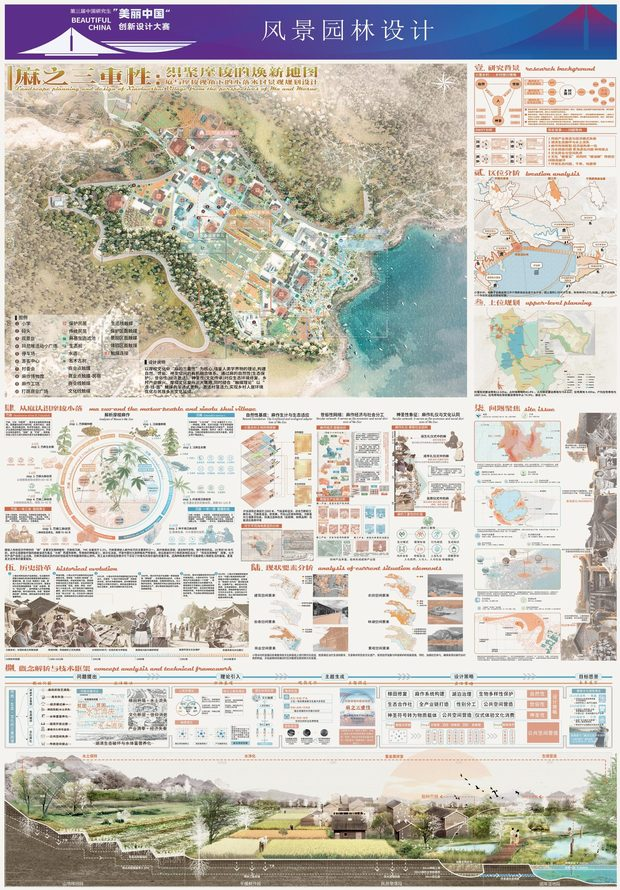
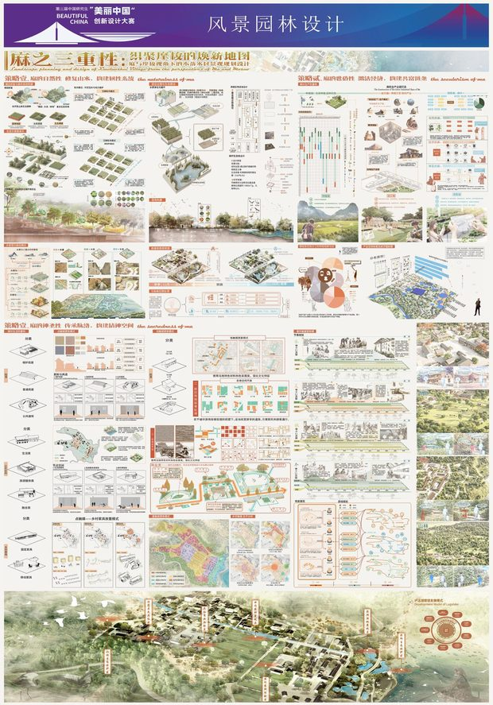
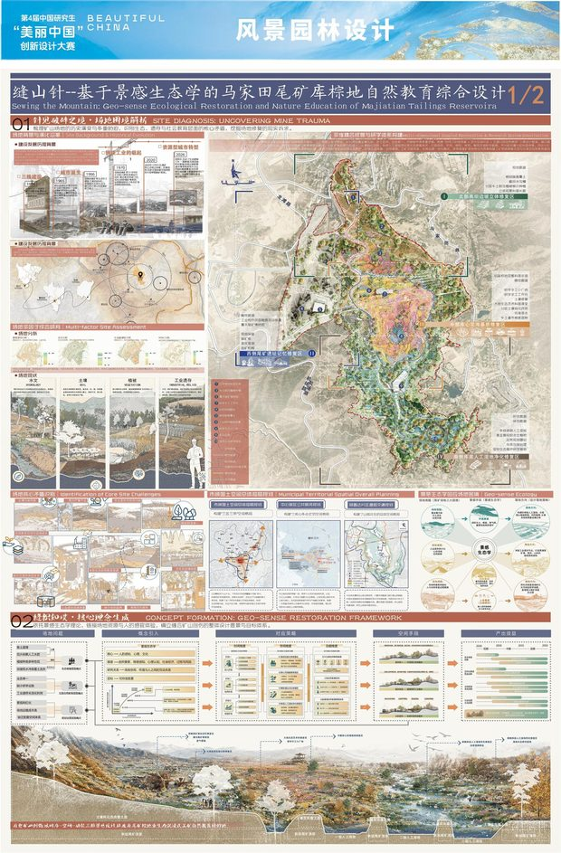
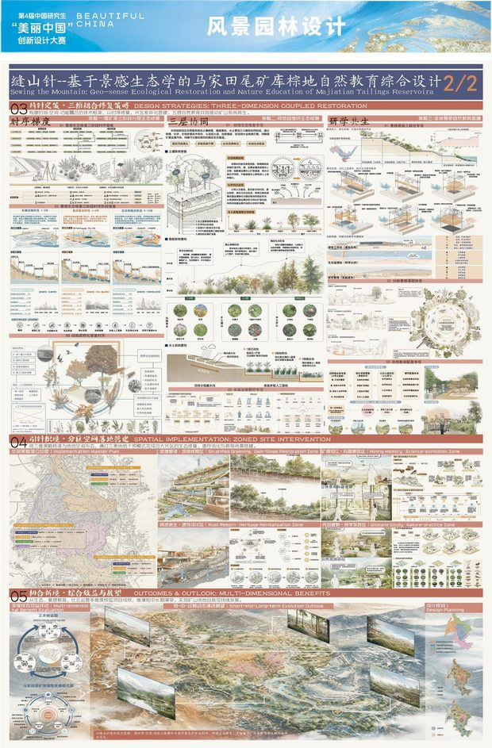
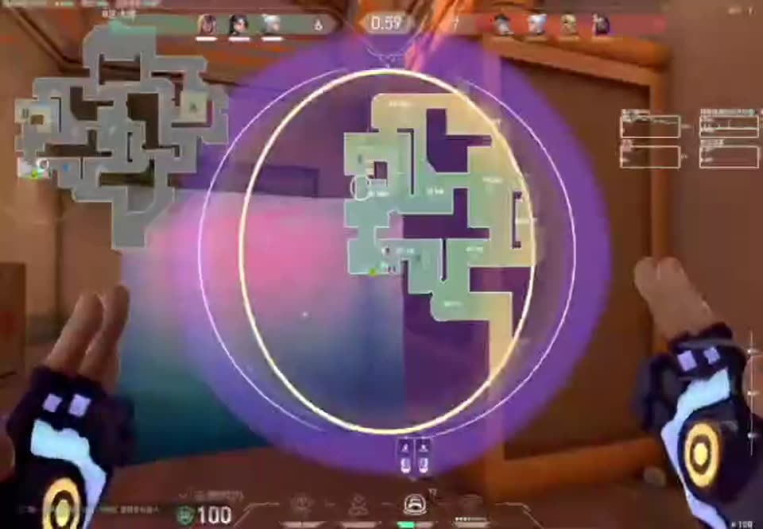
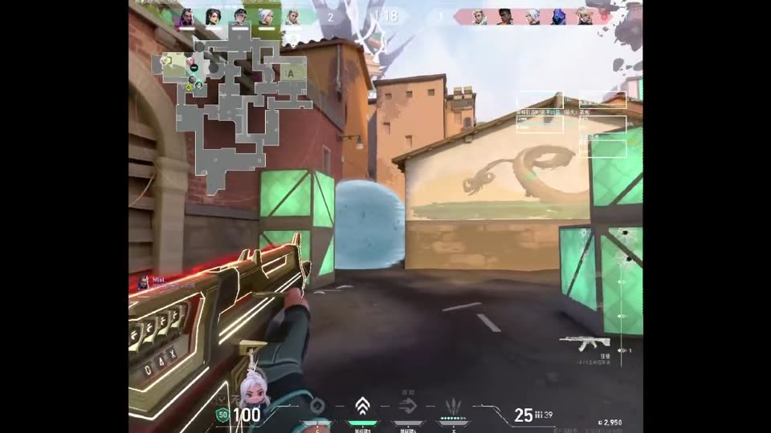

2026 · 景观设计
黄河 · 安澜时
基于小浪底水库上游生态修复提升水电潜力景观设计
- 米兰设计周 中国高校设计学科师生优秀作品展 · 全国决赛一等奖
- 同赛事 四川赛区一等奖
参与场地分析、策略推演与图面表达。
竞赛 · 团队协作 · 图纸表达
2026 · 景观设计
基于小浪底水库上游生态修复提升水电潜力景观设计
参与场地分析、策略推演与图面表达。


2025 · 乡村振兴
织聚摩梭的焕新地图 —— 摩梭视角下的小落水村景观规划设计
参与村落调研、文化转译与版面制作。


2025 · 棕地修复
基于景感生态学的马家田尾矿库棕地自然教育综合设计
参与场地生态评估、自然教育路径与图册编排。
关于在建项目 德阳五洲广场城市更新、德阳轨道站点周边环境修复、成都三圣乡科研基地、雅安黄龙民宿四项实践仍在建设中，因保密要求暂不公开展示，可在面试时当面介绍。
论文 · 专利 · 学术报告
《城市街道绿色暴露的健康效益研究进展》
系统梳理街道绿色暴露的测量方式、健康效益与作用路径，用文献计量与定性归纳结合的方式建立研究框架。
《一种融入生态系统服务的公园绿地可达性评估方法及系统》
把调节服务与文化服务纳入可达性测算，改进高斯两步移动搜索法在城市公园评估中的适用性。
《西蜀园林文化感知与恢复性效益研究》
以文化感知为切口讨论西蜀园林的恢复性效益，尝试把定性体验转成可比较的评价维度。
工具 · 方法 · 表达
SketchUp、Lumion、D5、Photoshop；从场地调研、方案推演到文本排版的完整流程。
文献计量、问卷与访谈、Excel 数据整理与图表、结构化报告与 PPT 汇报。
Codex、DeepSeek Harness、Muse 日常使用；自学机器学习基础；Unity（基础）。
《云生结海楼》 · 4′33″
《云生结海楼》· 4 分 33 秒。点击封面播放；手机流量建议连 WiFi 观看。

2′01″
0′23″Tactical Atlas · 用 6,458 万条 PUBG 死亡记录做的战术热区 打开战术图册 →
简历 · 作品原件 · 实习沟通
想聊项目、要作品原件，或者谈实习，随时找我。